View at 100 percent browser zoom. Drafts only. Islands and fliers are placeholders; the hazard strips are the accepted dither drafts.
Clear night, moon: v3 left, final right, 2x
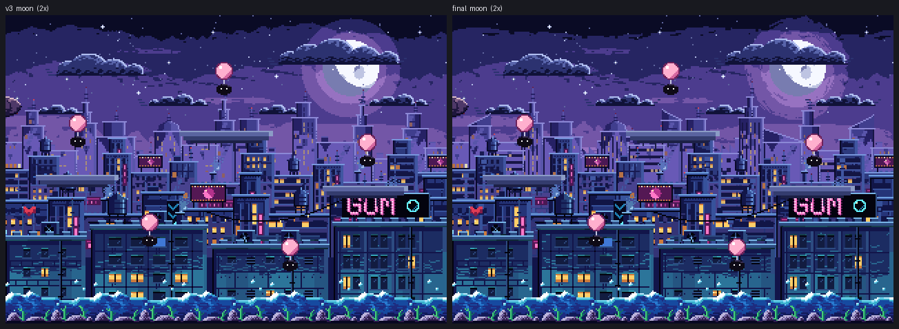
Storm, rain and search beams: v3 left, final right, 2x
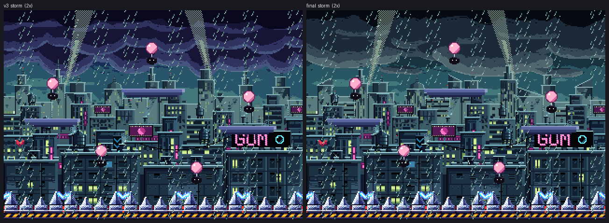
Ember dusk, low sun: v3 left, final right, 2x
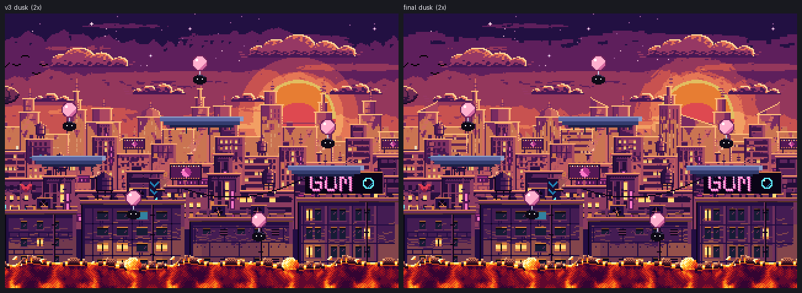
3x: sway, drift, tile loops and cast light. The drift is faster than in the game so that the loop closes.
Clear night, moon
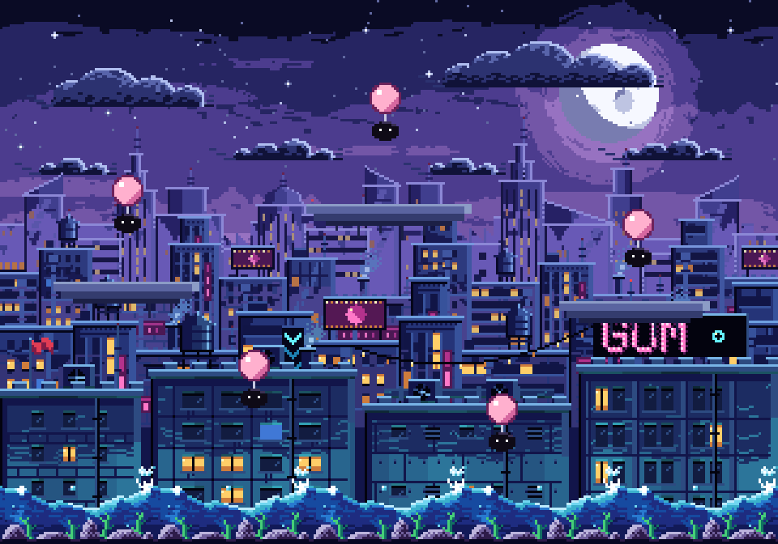
Storm, rain and search beams

Ember dusk, low sun
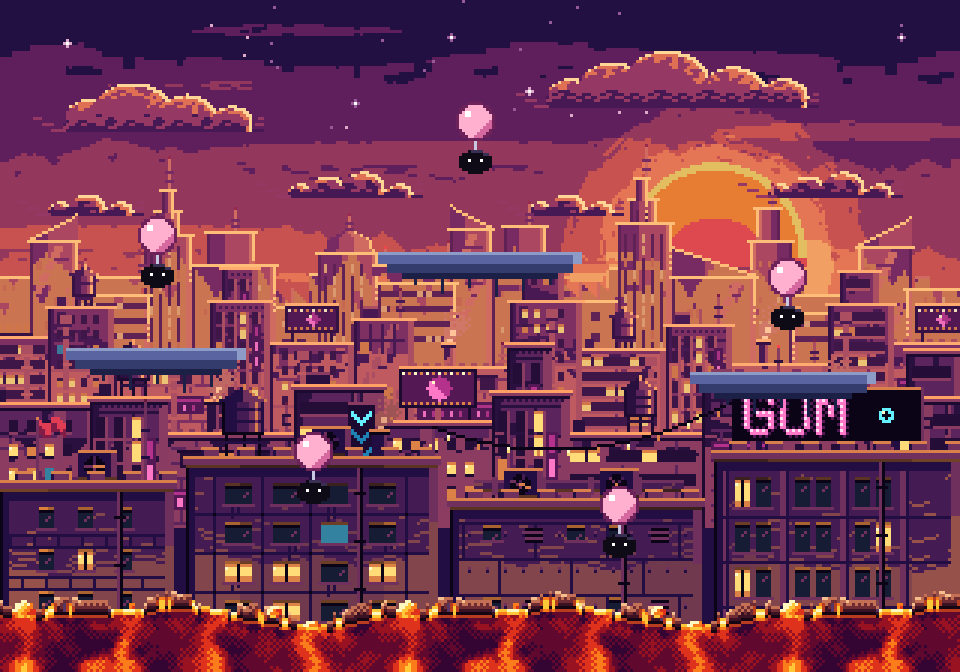
Clear night, moon, still at 3x
Clear night, moon, still at true size
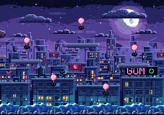
Storm, rain and search beams, still at 3x
Storm, rain and search beams, still at true size
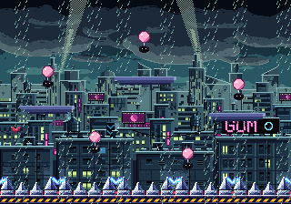
Ember dusk, low sun, still at 3x
Ember dusk, low sun, still at true size
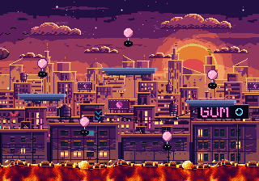
Clear night, moon: planes, each alone, at 2x
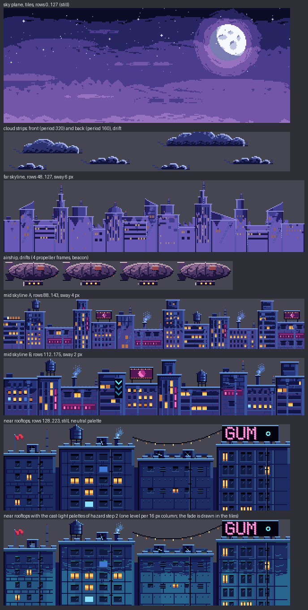
Storm, rain and search beams: planes, each alone, at 2x
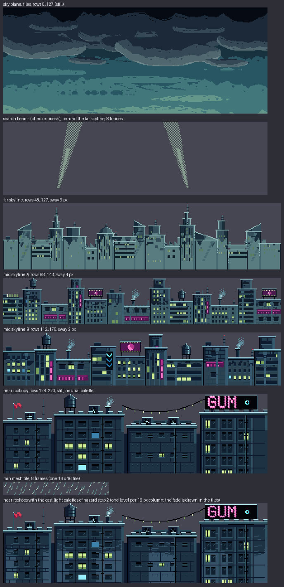
Ember dusk, low sun: planes, each alone, at 2x
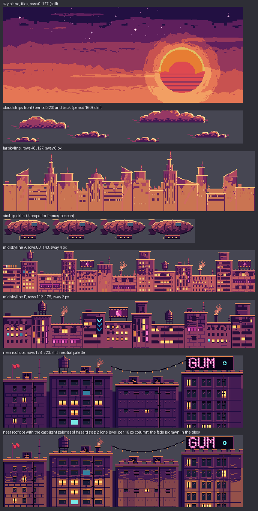
One sheet per plane and mood at true size, full tiling width. Transparent colour: magenta 255, 0, 255. The near sheet uses the level 3 lit palette so that the cast-light role is a colour of its own.
Clear night, moon: sky, 320 x 128
Clear night, moon: far, 336 x 80

Clear night, moon: midA, 336 x 64
Clear night, moon: midB, 336 x 64
Clear night, moon: near, 320 x 96
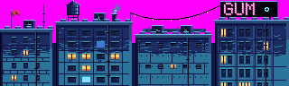
Clear night, moon: cloudsfront, 320 x 32
Clear night, moon: cloudsback, 160 x 32
Clear night, moon: airship, 256 x 32
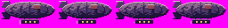
Storm, rain and search beams: sky, 320 x 128

Storm, rain and search beams: far, 336 x 80

Storm, rain and search beams: midA, 336 x 64
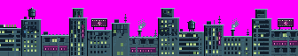
Storm, rain and search beams: midB, 336 x 64
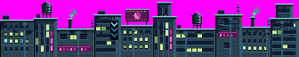
Storm, rain and search beams: near, 320 x 96
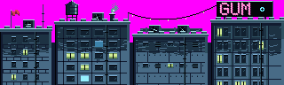
Storm, rain and search beams: beams, 320 x 88
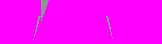
Ember dusk, low sun: sky, 320 x 128

Ember dusk, low sun: far, 336 x 80
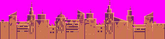
Ember dusk, low sun: midA, 336 x 64
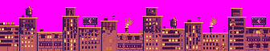
Ember dusk, low sun: midB, 336 x 64
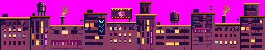
Ember dusk, low sun: near, 320 x 96
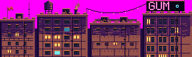
Ember dusk, low sun: cloudsfront, 320 x 32
Ember dusk, low sun: cloudsback, 160 x 32
Ember dusk, low sun: airship, 256 x 32